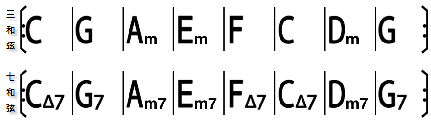
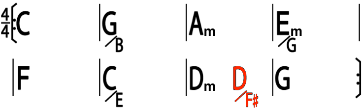
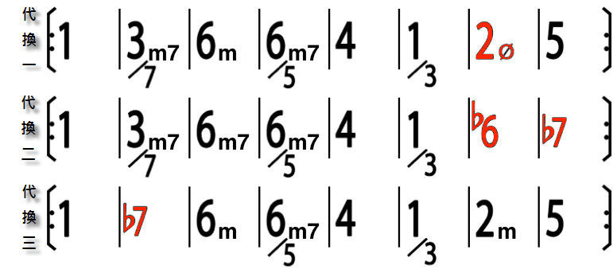

卡農進行 (Canon Chord Progression)
發布日期：2010-03-27
卡農 (Canon) 是一種作曲的技巧，利用 對位法 (複格) 重複的特性，利用同樣的音符，不斷的重疊出很有層次的旋律面，造就越聽越好聽，而且越聽越優美的特性.
應用這種技巧最有名的大概就是帕海貝爾 (Pachelbel) D 大調卡農，還有重新詮釋這首曲子的音樂家們:
- Pachelbel Canon in D Major (弦樂版)
- George Winston - Variations on the Canon by Pachelbel: 喬治溫斯頓 四季鋼琴專輯中，改編的帕海貝爾卡農鋼琴變奏曲
- Rock Canon: 台灣吉他手JerryC 重新改編的
- Aphrodite’s Child - Rain and tears: 另外一首用卡農技巧的經典歌曲.
帕海貝爾 D 大調卡農從電影 我的野蠻女友 之中以插曲出現之後，然後台灣的吉他手 JerryC 改編成 Rock Canon，使的這首本來就很紅的歌，又更紅了.
卡農進行 (Canon Chord Progression)
不過這邊我想聊的是關於帕海貝爾 D 大調卡農 (本文以 “卡農” 表示此曲) 的和弦進行應用，網路上很多人管他叫黃金八級，不過我個人習慣借用卡農這首歌的知名度來稱呼這組和弦進行 - 卡農進行 (Canon Chord Progression)
在流行歌曲當中，不管是中文或者西洋歌曲，因為應用卡農進行的歌曲甚多，特別是 Ballad (敘事) 曲. 所以我個人覺得這組和弦進行有必要特別整理討論它的各種常見的應用模式. (不常見的不表示沒有 or 不行.)
為了方便解釋，還是用 C 大調來說明這組和弦進行:
卡農進行基本形

舉例:
這組進行，只用到基本大調順階三和弦的一到六級，直接彈就已經很好聽了，而且有帕海貝爾卡農的感覺，是直接用來套歌曲 (採譜)，寫歌很好的參考樣式 (Pattern).
基本應用一: 增加降冪 Bass Line

舉例:

這是最常用的變化，很多歌曲都會出現這種組合. 剛好這一組和弦進行增加降冪使用到的音，都是和弦內音，所以合諧度很高. 除了保留和弦進行本身的效果，同時增加了低音的層次感.
基本應用二: 把順階三和弦換成順階七和弦

舉例:

很基本的應用，通常應用在改編成鋼琴版 or 吉他版，不插電 (Unplugged) 會很常見這樣的例子.
基本應用三: 順階七和弦和順階 Bass Line 搭配而改變的和弦代換

- 3m7/7 (3572) 替換原本的 57 (5724)，“替換” 不像 TSD 代理那樣，要考慮 TSD 的功能性，這邊指是純粹用來代換，製造出新的和弦進行.
- 3m7 (3572) 代換 1M7 (1357): 這就是很明確的功能 TDS 代換
- 6m7/5 維持 6m 同時增加了把六級的七度音當根音用. 有時候 6m7/5 也可直接改成 3m7/5
舉例:

基本應用四: 其他 TSD 代換

這可以換的就很多了，這裡舉的例子是最常見的，後四小節本來聽起來是降冪的，變成升冪的感覺. 其中 2m 代 4，3m7 代 1M7，4 代 2m 應該不難理解.

基本觀念可以參考 “TDS 和聲代換” 的說明.
基本應用五: 經過和弦 / 改變拍點
我們提到這個基本形的時候，並沒有特別去強調和弦的位置和拍子的關係，但是當同樣的組合，當每小節有兩個和弦時 (通常是慢歌)，我們做一個拍子上的位置變化，改成如下:

把每小節第三拍的和弦改在第四拍彈，當成經過和弦使用.
進階應用
接下來的部份是稍微用了一些和聲技巧的應用，雖然說進階，實際上提到的應用，也都是很常見的應用技巧.
進階應用一 - Line Cliches

參考任一組基本應用的原形或者是代換結果，將前四小節或者後四小節用 Line Cliches 這種技巧取代.
另外一點可以思考的就是，line cliches 這種技巧， 不是只有在低音做半音變化，也可以在其他地方做半音變化，像是高音的部份.
更多關於 Line Cliches 相關請參考 “掛留和弦 (Suspended Chord)” 一文的說明.
進階應用二 - 次屬和弦 (Secondary Dominant)
上述提及的基本應用的進行，都可以利用次屬和弦做和弦代換，舉例:

C 大調：

進階應用三 - 調式內轉 (Modal Interchange)
同樣的，上述提及的基本應用的進行，都可以這樣套，例如:

舉例:

例二、三都是直接改編和弦進行的方式，原則就是直接藉用小調的和弦進行. 這兩個例子在流行歌曲裡面都是很好用的編曲技巧.
其他應用 - 加入裝飾和弦
裝飾和弦包含了:
- 掛留和弦 (Suspended Chord，Xsus4，Xsus2，X7sus4，X7sus2 … etc)
- 附加九和弦 (Added 9th Chord，Xadd9)
- 六九和弦 (X6/9)
- Slash Chord: F/G = Fadd9，G/F = G7
這就很多了，常會和順階七和弦並用.
其他常見和弦進行: 1645、1625、6415、1564、251
這些類似的應用我相信歌曲彈到一定數量的朋友，一定都很熟析. 而且有很多各式各樣的應用變化. 我這邊只是把他們整理成比較有系統的分析而已. 而且這些應用，有些可以交叉使用，搭配一些轉調的技巧，變化就很多了..
其他還有很多是在編曲的時候利用技術的方式來應用，那又會更豐富了.
如同『藍調』12 小節的和弦進行。如果每次溝通都要說『12 小節進行』其實很詭異，倒不如直接用個有意義的名稱代表。『藍調』就是這個和弦進行的名稱、代表、感覺。表演的時候通常只會說『B Blues』，不會說『B Key，1141 1144 5411』進行，說完大概黑掉了。。。
以後的表演，只要 Band Leader 說『A 卡農』，然後大家就開始 Jam ，那這篇文章就成功了 XDD
其實不只卡農進行，其他出現頻率也很高的和弦進行，像是 1645、1625、6415、1564、251 … 等 … 不管是中文歌曲，還是西洋歌曲當中，出現頻率也是異常高. 同樣的在應用上，也可以參考本文的一些和聲技巧，做變化，然後加上段落轉調變化，基本上歌曲就很豐富了.
1645 or 1625，C 大調就是 C Am F G or C Am Dm G，是台灣一般初學吉他會學的. 另外 6415 和 1564 在國外的一些流行歌則是出現頻率異常的高，6415 較常出現在流行搖滾，1564 則是一般抒情歌. Youtube 有一段很有名的 4 Chords Song 就是 1564 進行.
因為上述這些和弦進行出現頻率很高，所以在學習上，我也把他列入基本功的範疇，在 吉他基本功 也有特別列出這些進行. 在練習歌曲時，也要盡量學習試著分析，只要歌曲的數量夠多，這些和弦進行就容易被注意到，進而加速學習的效果. 在 怎樣練一首歌 也提到，除了掌握技巧，也要了解和弦進行和旋律的關係. 如此，才能更有效率的學習，享受音樂.
結語
我個人第一次聽卡農曲是國小聽國內的音樂家 - 賴英里長笛專輯中一首 Rain and Tears，歌曲就是改編著名的經典老歌 Aphrodite’s Child - Rain and tears.那時候只是單純覺得這歌好優美，越聽越好聽.
等到開始學吉他之後，漸漸的發現一些流行歌曲當中的和弦次序 (那時候還不懂啥叫和弦進行，也不懂調性的概念，不過已經可以直接聽出調姓的特徵) 和這首 Rain and Tears 根本就是差不多. 而且很多時候都一模一樣，直接套上去就好. 久了之後，這就變成一個常用的模式 (Pattern).
玩音樂一段時間，大家都會發現，卡農進行出現的頻率是流行音樂中最高的. 因為它具備了讓音樂好聽的特性. 但是同一個東西，可以如此重複使用，然後寫出那麼多歌曲.
幕後的編曲工作者，他們每次拿到這樣的曲子的時候，還是必須要依照製作人的指示，弄出不一樣的花招，讓同樣一組和弦進行，聽起來不但不陳腔濫調，反而是讓人有耳目一新的感覺.
每次只要聽到這樣的曲子，我都會想，如果我是一個編曲工作者，當我每次拿到的曲子都是這樣的和弦進行，那我要怎麼編? 所以想想那些編曲前輩們，實在是很佩服他們的創意和巧思.
延伸閱讀
站內資料
- TDS 和聲代換
- 次屬和弦 (Secondary Dominant)
- 掛留和弦 (Suspended Chord)
- 調式內轉 (Modal Interchange)
- 和弦基礎
- 轉調曲例
- 吉他基本功
- 編曲方法論: 理論編曲和技術編曲
- 怎樣練一首歌
延伸閱讀 (站外)
- Canon (Wiki)
- Youtube - 為什麼流行歌聽起來都這麼像？
- Youtube - 我恨 帕海貝爾卡農！
更新紀錄
- 原文位址：https://rickmidi.blogspot.com/2010/03/canon-chord-progression.html
- 2010/03/27: 初版
- 2010/03/28: 增加 “基本應用五” 以及 “編曲者的思維”.
- 2014/12/08: 增加常用和弦進行描述，以及額外參考資料.
- 2016/04/30: 補充藍調的比喻
- 2021/09/12: 搬移新站